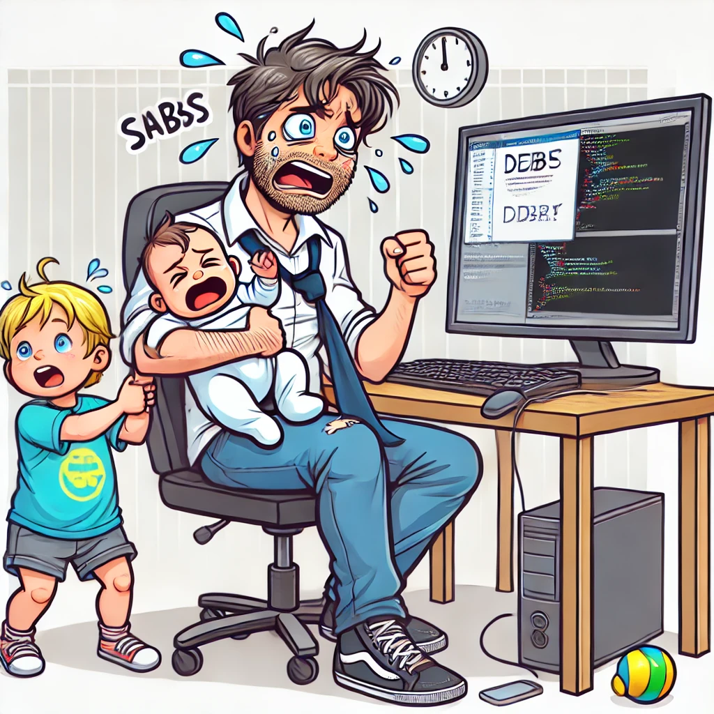

Cloud Resume Challenge Journey
Hello everyone, I'm Jonathan.
I've been working near the cloud industry for the past few years, but my focus has primarily been on utilizing products already produced in cloud services rather than designing them. With some free time on my hands, I decided to challenge myself by taking on the Cloud Resume Challenge. After two years of effort, I'm thrilled to announce that I've completed the challenge!

AWS services used and how they integrate with the entire architecture. (Image credit: Cody Waits)
2021: The Beginning
Step 1: Certification
In 2021, I began my journey by earning the AWS Cloud Practitioner certification. This introductory certification helped me gain a solid understanding of AWS, the industry-leading cloud platform. It took me about two weeks of study time to pass the exam.
AWS Cloud Practitioner Certification Badge
2023: Building the Foundation
Steps 2 and 3: HTML and CSS (4 hours | Feb 2023)
Using a Bootstrap template, I quickly put together my resume over the course of several evenings while watching TV. Thanks to the basic web design skills I've acquired over the years through platforms like Codecademy, this part was fairly straightforward.
Steps 4 and 5: Static Website and HTTPS (2 hours | Feb 2023)
Next, I created an S3 bucket named witcoskitech.com in the us-east-1 region (shout out to Northern Virginia, just a few miles from my house). I set all features and encryption to default, then uploaded the files from Steps 2 and 3 into the S3 bucket. To make the website accessible via HTTPS, I used CloudFront, setting the S3 bucket as the origin and adjusting the Origin access to "Origin access control settings (recommended)." After creating the CloudFront distribution and copying the S3 bucket policy, I was finally able to see my website live!
2024: Overcoming Obstacles
Step 6: DNS (30 minutes… scratch that, 80 hours | Feb 2023 to April 2024)
I purchased the domain witcoskitech.com through Route 53 and used AWS Certificate Manager to procure an SSL certificate for the site. However, this is where things went terribly wrong. For some reason, my S3 bucket wouldn't connect with my domain. I tried blog posts, AI chatbots, and posting on help forums, but nothing worked. I eventually gave up, especially as life got in the way—my first son was born!
In April 2024, an anonymous member of the Cloud Challenge Discord community finally replied to my post. We spent an hour trying to solve the issue but to no avail. Desperate, I posted a $20 bounty on Upwork with screenshots. Within two days, I received multiple solutions. A fantastic individual casually mentioned, "Apparently, your name servers are not configured properly." He guided me through the solution:
- Go to Route 53 / Registered domains /
witcoskitech.com/ Edit name servers and change them to match those from Route 53 / Hosted zones /witcoskitech.com/ NS record.
Steps 7-10: JavaScript, Database, API, Python (20 hours | May 2024 to July 2024)
After a break to welcome my second son, I resumed the challenge. By this point, AI chatbots like ChatGPT had become popular, and I decided to use one to help me continue. I know it's a bit of cheating, but with a 2-year-old and a newborn, I could only work on the challenge late at night after they fell asleep.
Here is the cartoon illustration mae by ChatGPT of a stressed man holding a baby and managing a two-year-old while trying to work on a computer. This image captures the light-hearted and humorous scenario of balancing the Cloud Resume Challenge with family life.
Since no one really wants to read a resume, I decided to expand the challenge into something more interesting by showcasing my cartographic and geographic skills. I created ski maps using an open-source GIS program called QGIS, utilizing DEM data from OpenTopography and ski map data from OpenStreetMap.org. I bought globalskiatlas.com to host this project.

Jack Frost Ski Mountain Ski Area Map
The inspiration for Global Ski Atlas came from a table of ski resorts in the U.S. by Stuart Winchester at Storm Skiing , a collection of ski resort maps at skimap.org, and the winter sports data display at openskimap.org.

QGIS Model used to generate ski maps. While not directly relevant to the Cloud Resume Challenge, mastering QGIS for this project was a challenge in itself. Getting the symbology, labeling, and even figuring out the angle to align the map (making the highest point north and lowest point south) pushed me to explore QGIS in ways I hadn't before in my career. This process of creating custom ski maps added an extra layer of complexity and learning to my journey.
I started by creating the DynamoDB databases. Setting up the visitor counter was easy with instructions from ChatGPT. Writing the JavaScript and the Python within the Lambda function was also straightforward, with most errors quickly resolved by the AI assistant. However, I got stuck on the API. A helpful comment on my Stack Overflow post pointed out that my Lambda function settings were incorrect. I switched to using Cursor.sh, which, along with Postman, helped me get the Lambda functions up and running.
For my other domain, which already had a database, I converted a Google Sheets file into a CSV file in the S3 bucket. From there, I easily converted it into a DynamoDB database. I currently only have Pennsylvania ski resorts in the database but can add more as needed. Next, I needed to create a Lambda function that would export HTML based on users selecting a resort. Despite numerous errors, I eventually got it all done with the help of Postman and some chatbot assistance.
Steps 12-15: Infrastructure as Code, Source Control, and CI/CD (20 hours | July-August 2024)
Next up was Infrastructure as Code. I admit, it had been a while since I last used the command prompt. However, with the help of my trusty AI sidekick, I used AWS SAM to define and deploy all my backend resources. I then opened up my GitHub account and created a repository for version control. Initially, I made a mistake by putting all the code, including the front end, in one repository. After six attempts, I finally got the code to deploy correctly. I then separated the front end and backend into separate deployments. If I were to do this again, I would separate the front end and backend from the start—something I plan on doing next with globalskiatlas.com. I ran into a small hiccup where my code created a new DynamoDB database, but I managed to reroute my API Gateway resource to the correct one.

My GitHub Actions Workflow for CI/CD
Future Plans: Automating the Data Pipeline
As I look to the future, I'm excited to take this project to the next level. My next challenge? Automating the entire data flow process. Here's what I have in mind:
The grand plan is to create a Lambda function that springs into action whenever the CSV file in S3 gets a refresh. This way, our DynamoDB database will always be in sync with the latest data, without any manual intervention. It's all about making the system smarter and more efficient!
This automation will not only streamline our workflow but also serve as a practical application of the skills I've honed through Steps 12-15 of the Cloud Resume Challenge. It's a perfect blend of what I've learned and where I want to go next in my cloud journey.
The Final Step
Step 16: Write a Blog Post (4 hours | August 2024)
Now, I'm on the last step. I still have work to do on my second skiing website, and I plan on earning more advanced cloud certifications. This challenge has introduced me to a dozen Amazon applications, opening the door to cloud computing for this geography nerd. Inspired by Matt Forrest, who frequently posts about Cloud GIS, I hope to continue expanding my skill set in digital cartography and GIS.
Thank You and Further Resources
Thank you for taking the time to read through my Cloud Resume Challenge journey! If you're interested in diving deeper into the code and projects mentioned, here are the relevant GitHub repositories:
- Online Resume (Backend and Frontend): https://github.com/jwitcoski/cloud-resume-challenge-backend
- QGIS Model for Ski Atlas: https://github.com/jwitcoski/skiatlas
- Global Ski Atlas Frontend (Future Site): https://github.com/jwitcoski/globalskiatlas--frontend
- Global Ski Atlas Backend (Future Site): https://github.com/jwitcoski/globalskiatlas--backend
If you'd like to connect or follow my future projects, you can find me on:
- LinkedIn: https://www.linkedin.com/in/jonathanwitcoski/
- Twitter (X): @MappingThings and @GlobalSkiAtlas
Feel free to reach out if you have any questions or just want to chat about cloud computing, GIS, or skiing!